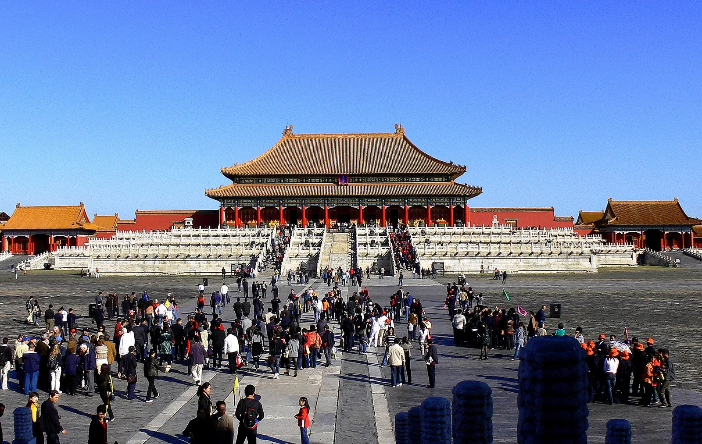

故宫博物院 · 景山公园
故宫博物院 → 景山公园
第一段｜故宫博物院：以宫殿建筑和院落空间为重点，按当天开放与预约情况选择参观范围。
后续安排｜景山公园：以城市历史景观与公园漫步为主，登高部分可按体力调整。
本日按私家团节奏游览，可按体力与兴趣增减停留点。停留时间与交通耗时不作未经核实的固定承诺。
用餐：按饮食偏好协商，费用与包含项需确认
交通：独立同行的交通方案需确认，未编造车程或班次

独立成团，不拼团，按同行客人需求定制
故宫、颐和园与天坛分别体验
园林漫步按体力调整
不把多个远距离景点挤在同一天
故宫博物院 → 景山公园
第一段｜故宫博物院：以宫殿建筑和院落空间为重点，按当天开放与预约情况选择参观范围。
后续安排｜景山公园：以城市历史景观与公园漫步为主，登高部分可按体力调整。
本日按私家团节奏游览，可按体力与兴趣增减停留点。停留时间与交通耗时不作未经核实的固定承诺。
用餐：按饮食偏好协商，费用与包含项需确认
交通：独立同行的交通方案需确认，未编造车程或班次
颐和园
当天重点｜颐和园：沿园林与湖岸安排游览，具体路线按天气、开放情况和步行能力调整。
本日按私家团节奏游览，可按体力与兴趣增减停留点。停留时间与交通耗时不作未经核实的固定承诺。
用餐：按饮食偏好协商，费用与包含项需确认
交通：独立同行的交通方案需确认，未编造车程或班次
天坛公园 → 前门大街
第一段｜天坛公园：围绕历史建筑与公园空间展开游览，不预设未确认的演出或特别活动。
后续安排｜前门大街：以传统商业街区和城市风貌漫步为主。
本日按私家团节奏游览，可按体力与兴趣增减停留点。停留时间与交通耗时不作未经核实的固定承诺。
用餐：按饮食偏好协商，费用与包含项需确认
交通：独立同行的交通方案需确认，未编造车程或班次
北海公园 → 什刹海
第一段｜北海公园：围绕历史园林与水岸空间安排慢游。
后续安排｜什刹海：在湖岸与周边街巷体验老北京生活氛围。
本日按私家团节奏游览，可按体力与兴趣增减停留点。停留时间与交通耗时不作未经核实的固定承诺。
用餐：按饮食偏好协商，费用与包含项需确认
交通：独立同行的交通方案需确认，未编造车程或班次
以下为登录携程后查询到的具体房型展示价，单位为人民币/间/晚。仅作住宿预算参考，不是本线路全程住宿价或私家团总价；酒店未预订。星与钻以各酒店标识区分，钻级不等于官方星级认证。
会员、首单及限时优惠因账户和房量而异。所记展示价未在订单结算页确认税费，含税情况、额外费用及最终应付金额需在预订时核实。不同出行日期须重新报价。
查询时间：2026年11月8日 19:58–20:03（北京时间）。当日查询参考，价格随时变化。
携程四星标识
¥518 /间/晚 · 当日查询参考
高级双床房
携程五星标识
¥708 /间/晚 · 当日查询参考
B座标准遮窗客房（1张大床或2张单人床）
实际服务包含项以书面报价确认；本页为可定制行程方案。
未在确认报价中列明的住宿、餐饮、交通、门票及额外体验不作包含承诺。
可协商酒店档次、房型、服务语言、用车与导览安排。
仅为您与同行亲友独立成团，不安排陌生客人拼团。住宿、交通、导览、门票、餐饮等实际包含项目与私家团总价，以按出行日期和人数出具的书面报价为准。
这是为您和同行亲友独立安排的私家团，不与陌生游客拼团。出行人数、服务语言、用车和导览需求会在报价时逐项确认。
可以协商调整，但热门景区和场馆受实名预约、开放安排、天气与交通影响。公布的行程是建议方案，不代表门票、索道或特别活动已经预订成功。
酒店会结合入住/退房日期、人数、房间数、房型及酒店档次核对。携程酒店价仅在同日期和同条件下作为参考，早餐、取消和税费条件一并确认；不将未核实酒店价写成固定团费。
当前页面为可定制行程方案。住宿、交通、门票、用餐及导览等包含项目与最终金额，以按出行日期和实际人数提供的书面报价为准，不预设尚未确认的包含项。
景点顺序为可调整的私家团建议方案；实际开放、预约、天气与交通安排须在出行前复核。酒店价格来源见住宿参考价栏目。